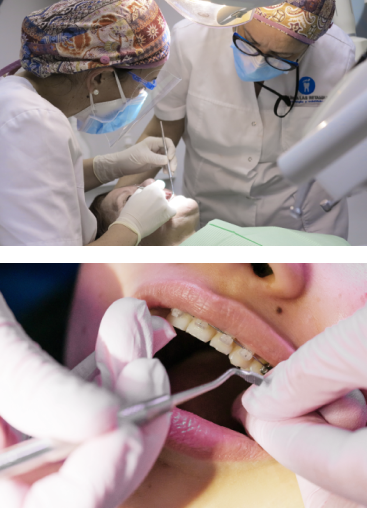

Servicios de Odontología
Especializaciones y tratamientos
Tratamientos de ortodoncia
Tratamientos para corregir apiñamientos dentarios y maloclusiones destinados a niños, jóvenes y adultos.
Cada caso en particular será diagnosticado por un profesional especializado para realizar el tratamiento adecuado: ortodoncia invisible, brackets metálicos o estéticos de zafiro y aparatología auxiliar

Tratamientos de Odontopediatría
Los tratamientos infantiles tienen tres finalides:
- Curar la patología existente
- Motivar a los niños con el fin de evitar cualquier rechazo al dentista y que su experiencia en la visita a la consulta sea agradable y serena
- Educar al paciente infantil para que su salud bucal sea la más adecuada posible y se mantenga en el tiempo
Patología de ATM y Bruxismo
Los pacientes con tendencia a rechinar los dientes o apretarlos suelen tener numerosas complicaciones como dolor en cervicales, dolor de cabeza, sensibilidad dental, zumbidos en oídos, movilidad dentaria y bloqueos mandibulares
El bruxismo se puede prevenir y tratar con un desprogramador oclusal, comunmente conocido como férula de descarga o placa de relajación. El desprogramador oclusal se realiza a tu medida tomando múltiples datos del craneo efectuados por nuestros especialistas
Tratamiento de Periodoncia
La periodioncia es la especialidad de la odontología que trata las enfermedades de las encías y del hueso que sostiene los dientes.
En nuestra clínica, realizamos exitosos tratamientos con procedimientos avanzados e innovadores para evitar complicaciones como el sangrado espontáneo de la encía, la movilidad de las piezas dentarias, la sensibilidad al frio o al calor o la sensación de dientes "alargados"
Prótesis dentales Coronas/Carillas
Disponemos de un amplio abanico de soluciones terapéuticas. Siempre realizamos un estudio previo para realizar dos tipos de tratamientos:
Prótesis fijas con coronas (fundas) y puentes dentales que son una excelente solución cuando es posible salvar la raíz natural del diente o cuando un tratamiento con implantes no es posible
Prótesis removibles (dentaduras postizas) que son una solución rápida y económica para pacientes que han perdido sus dientes; se diseñan y se construyen totalmente a medida de acuerdo con las características y necesidades de cada paciente
Servicios: